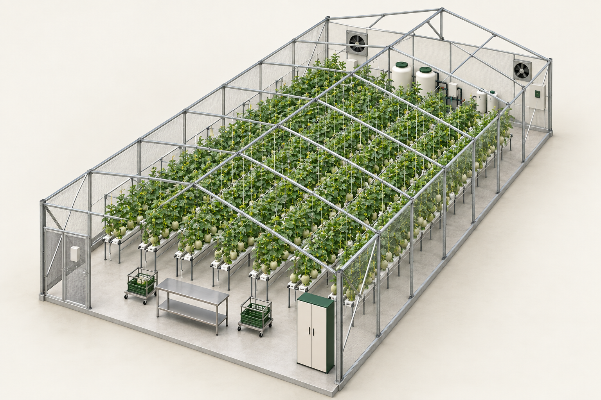

Modeled equipment footprints
Numbers match the section plan. Generic furniture envelopes; verify final vendor dimensions. Repeated shelf tiers share their footprint.
A detailed visual direction for every greenhouse, support and postharvest section in our guideline.

Design basis. 10 × 20 m GH, 14 × 30 plant points; 3 m eave, 4.5 m ridge, 2.5 m trellis. Furniture and shared-room sizes are proposed.
Three scales. Production module, shared site facilities and central postharvest hub. Section IDs include open zones and equipment overlays.
Layout review. 150 m² gross crop band includes paths; BP's 140 m² net remains unresolved. This is a design study, not construction or rooftop approval.
Numbers match the section plan. Generic furniture envelopes; verify final vendor dimensions. Repeated shelf tiers share their footprint.